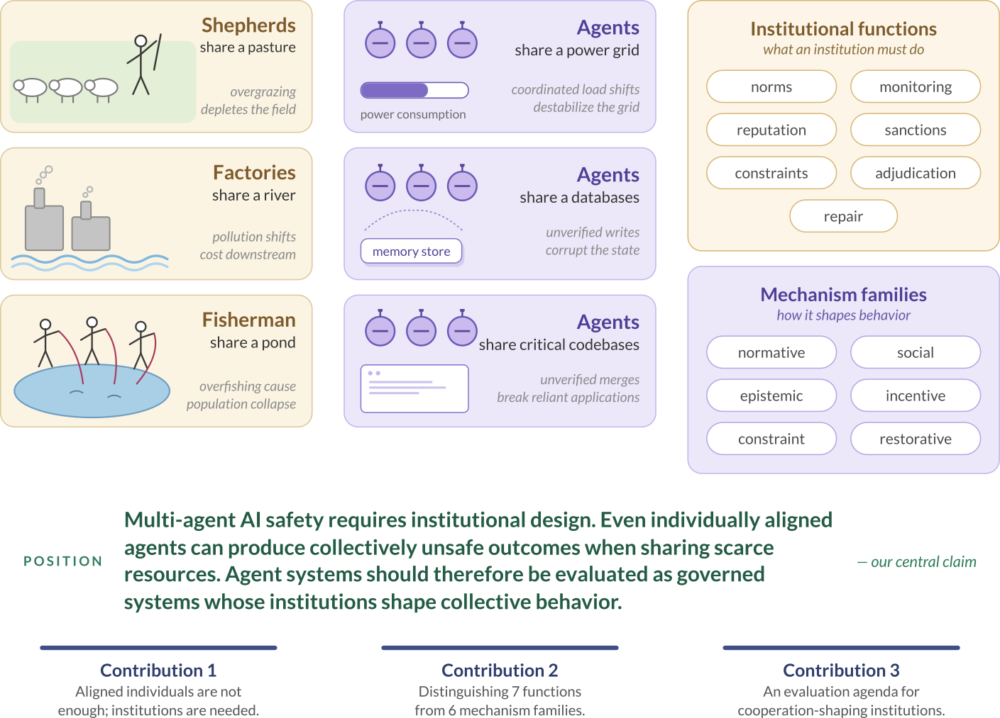
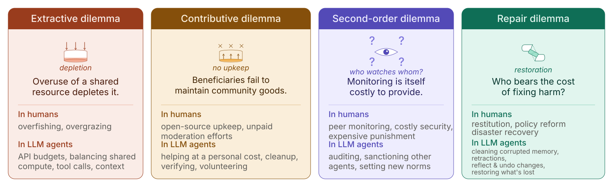

Connect leaves to exact human, LLM-agent, and computational-agent studies.
Our position
Multi-agent AI safety requires intentional institutional design. Even individually aligned agents can produce collectively unsafe outcomes when sharing finite resources. We believe agent systems should be studied as governed systems whose institutions shape collective behavior.
Problem
LLM agents are already embedded in real-world settings.
Every day, teams of sub-agents—on your computer or on the Internet—must vie for and share finite tools and resources. Shared codebases, public databases, and compute form artificial commons, where classic collective-action failures can reappear.
Aligned individual agents do not simply add up to a cooperative society.

Motivational design space
We see cooperation-shaping patterns everywhere.
Human communities have spent centuries trying warnings, sanctions, norms, appeals, repair, and other ways of living with shared resources. Some serve the greater good; others become coercive regimes.

Our current framework
Aligned individuals are not enough; group-level design is needed.
We start with four cooperation dilemmas in human and LLM-agent systems. There are likely many, many more worth discussing too!

We mapped what’s in the literature to a unified taxonomy.
We coded 561 documented uses of cooperation-shaping mechanisms, from lab experiments and legal rules to peer-to-peer protocols and LLM-agent studies. 506 of them act through one of 66 mechanisms in 18 themes, grouped by the six mechanism families of the paper; the rest describe group-level phenomena or fall outside the scope. Choose any mechanism to see its definition and the sources behind it.
How the counts add up. 213 instances from 142 multi-agent studies (one per mechanism a study tests) + 280 from other fields and systems + 68 seed examples = 561. Of these, 397 single mechanisms + 109 named combinations = 506 appear in the map; the other 41 describe group-level phenomena and 14 fall outside the scope.
Loading the taxonomy…
Text list of all mechanisms
Charting a promising research agenda
It is worth asking: what are the best ways to capture cooperative outcomes?
Capturing cooperation may require empirical, quantitative, qualitative, and interpretive methods. The practical question is which interaction levels and metrics are feasible to evaluate as group- and population-level dynamics become more complex.
Distinguish strong, weak, conflicting, and not-yet-curated coverage.
Show limitations and open questions instead of treating citation count as quality.
Welcome reviewed corrections and additions through GitHub.
Final parting words
So long as humans bear the consequences of AI behavior, we believe humans should have a say in which values are embedded in AI agent institutions.
Even if capable AI systems eventually design and run those institutions themselves, today’s choices may be amplified in future AI agent economies and societies.